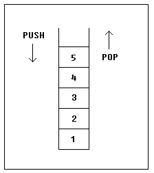

|
Уроки Ассемблера 8086 для начинающих (Часть 9)
Стек Перевод: Поляков А.В. http://www.avprog.narod.ru Стек - это область памяти для хранения временных данных. Стек используется командой CALL для хранения адреса, чтобы программа могла вернуться к тому месту, откуда была вызвана процедура. Команда RET получает этот адрес из стека и возвращает управление по этому смещению. то же самое происходит, когда команда INT вызывает прерывание, она записывает в стек регистр флагов, сегмент и смещение кода. Команда IRET используется для возвращения после вызова прерывания. Вы можете использовать стек для хранения любых данных. Для работы со стеком имеются две команды: PUSH - записывает 16-ти битовое значение в стек. POP - получает 16-ти битовое значение из стека.
Примечания:
Стек использует алгоритм LIFO (Last In First Out - Последним пришел - первым ушел), это значит, что если мы поместим эти значения одно за другим в стек: 1, 2, 3, 4, 5 то первым значением, которое мы можем получить из стека, будет 5, затем 4, 3, 2 и только потом 1.  Очень важно применять равное количество команд PUSH и POP, иначе стек может быть нарушен и невозможно будет вернуться в операционную систему. Как вы уже знаете, мы используем команду RET для возвращения в операционную систему. Когда программа запускается, ее адрес записывается в стек (обычно это 0000h). Команды PUSH и POP чрезвычайно полезны, т.к. для хранения данных обычно недостаточно только регистров. Вот выход из ситуации:
Пример:
Стек можно также использовать для того, чтобы поменять местами значения в регистрах:
Обмен данными происходит потому, что стек использует алгоритм LIFO (Последним пришел - первым вышел), поэтому когда мы помещаем в стек число 1212h, а затем - 3434h, то при обращении к стеку мы сначала получим число 3434h, и только потом - 1212h. Область памяти стека устанавливается при помощи регистров SS (Stack Segment - сегмент стека) и SP (Stack Pointer - указатель стека). Обычно операционная система устанавливает значения этих регистров на начало программы. Команда "PUSH источник" делает следующее:
Команда "POP приемник" делает следующее:
Текущий адрес указателя в SS:SP называется вершиной стека. Для COM-файлов сегмент стека - это обычно и сегмент кода, а указатель стека установлен в значение 0FFFEh. По адресу SS:0FFFEh записывается адрес возврата для команды RET, которая выполняется в конце программы. Вы можете наблюдать за работой стека, щелкнув по кнопке [Stack] в окне эмулятора. Вершина стека отмечена знаком "<". |